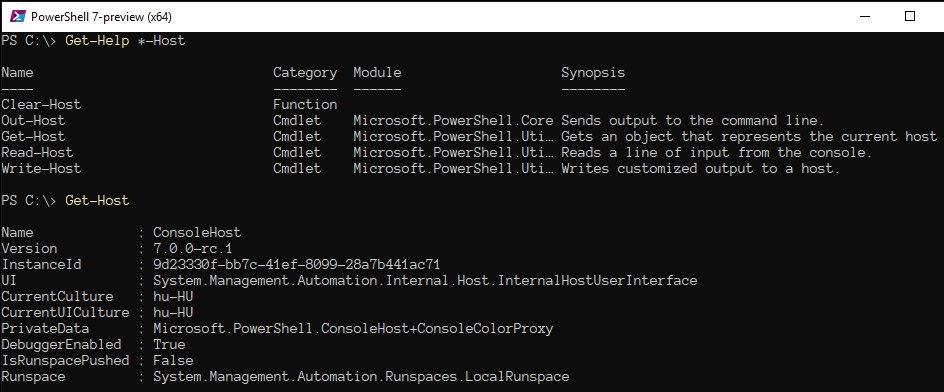
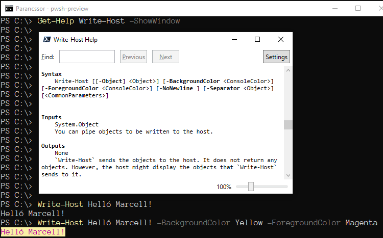

A Host program azt az adott operációs rendszeren (platformon) futó
folyamatot jelenti, amely a PSReadLine parancssorkezelőn keresztül
a PowerShell parancsértelmezőt összeköti a felhasználóval.
Ez a gazdaprogram a felhasználó számára egy karakteres képernyőablak soraiban
jeleníti meg az információt, és ugyanitt teszi visszaolvashatóvá a felhasználó
által a billentyűzetről és egérről bevitt karaktersorozatokat, amelyeket
azután átad a parancsértelmezőnek.
A Host gazdaprogram tehát úgy jelenik meg számunkra, mint egy
parancssori ablak, más néven konzol vagy terminál. Ezt a programot valamennyi platformon megtaláljuk,
és az adott platformra jellemző módon beállíthatjuk a jellemzőit: a betűk és
a háttér színét, az ablakon belüli karaktertábla szélességét és magasságát,
a betűk megjelenítésére használt karakterkészletet (fontot), a betűk méretét,
stb.
Command Line Settings
A gazdaprogram technikai jellemzőit a Get-Host utasítással
listázhatjuk a képernyőre.

Get-Host
A Write-Host parancsmag a terminál beállított tulajdonságainak
megfelelően jeleníti meg az ablakban a megadott üzenetet, amit egy sortöréssel
zár. A záró sortörés a -NoNewLine kapcsolóval elhagyható, a kiírt
üzenet hátterét és betűszínét pedig rendre a -BackgroundColor és
-ForeGroundColor paraméterek segítségével tudjuk megadni, mégpedig
a színek angol nevét használva.

Write-Host
Egy utasítás több sorban, több utasítás egy sorban
Ha egy utasítás hossza meghaladja a parancssori ablak szélességét, akkor nem
a vízszintes görgetés indul el, hanem a beírt karakterek automatikusan az
ablak következő sorába kerülnek. A hosszú utasítássorok tördelése tehát
automatikus.
Long line
Az ENTER billentyű leütésekor a parancsértelmező feldolgozza az
addig beírt szöveget. Ha a szöveg végén lezáratlan kifejezést talál,
akkor nem kezdi meg a befejezetlen parancs feldolgozását, hanem
az új sorban egy másodlagos prompt után várja a folytatólagos parancsbevitelt.
Incomplete expression
Ha a teljes beírt szöveg végén álló kifejezés hiánytalan, akkor
a parancsértelmező tovább lép a végrehajtás felé, és már csak az esetlegesen
hiányzó kötelező paraméterek értékét kéri a felhasználótól,
azután végrehajtja a parancsot.
Missing mandatory parameter
Ha a kiadott parancsot eleve több sorba szeretnénk rendezni, a sor végén
a `backtick karakterrel jelezhetjük a
parancsfeldolgozónak, hogy az utasítás még nincs lezárva, és a következő
sorban folytatódni fog. Ekkor a parancsfeldolgozó automatikusan adja a
másodlagos prompt-ot a következő sor elején, és nem kísérletezik a begépelt
sor értelmezésével és végrehajtásával.
Multiple lines with backtick
Ha ellenkezőleg, egyetlen sorban több utasítást is szeretnénk elhelyezni,
akkor azokat a ; pontosvessző karakterrel kell egymástól
elválasztani.
Multiple commands with semicolon
Az ablak törlése
A parancssori ablak tartalma a Clear-Host utasítással törölhető:
ez csak az ablakban lévő karaktertábla tartalmát törli, a legfelső sorba
állítva a beviteli prompt-ot; a már kiadott parancsok listája, a
parancstörténet (History ) megmarad és
visszakereshető, utolsó elemeként az éppen kiadott Clear-Host
utasítással együtt.